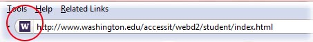
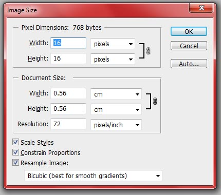

Lesson 4: Creating a Favicon
Overview
In this lesson, you will learn what a favicon is and how to create one in a graphics editing program. You will then learn how to insert the appropriate html to the <head> section of your page to add the favicon to your site.
Learner Outcomes
At the completion of this exercise, you will be able to:
- utilize a graphics editing program to create a favicon image.
- adjust the settings for a favicon image so that it is the appropriate pixel size and file format.
- use the <link> element in the <head> section of your page to add the favicon to your site
What is a favicon?
Have you ever noticed the tiny icon appearing on the left side of the address bar in your browser next to the URL?

You might also find this decorative icons, called a favorite icon or favicon for short, in your browser's favorites list or displayed on tabs. While not a requirement for any web site, favicons do add an extra touch of personalization that allow you to help brand your site and differentiate it from others. Favicon images are small in size, only 16 pixels in height by 16 pixels in width, so there is not much space for complex designs. Still, a good favicon that is clean, simple and easily identifiable can provide a good visual indicator for visitors navigating to your site through their tabs or bookmarks.
How can you create a favicon?
It is possible to create a favicon in just about any graphics program. There are also a number of online services that allow you to create favicon images as well. The challenge with creating favicons is that you only have a 16 x 16 pixel space to work with, which can make it difficult to get your image exactly how you want it. In order to design your icon, you will need to either zoom in very close so you can see each pixel or start with a larger image and then reduce it down in size. The image below shows what the favicon for this site looks like when zoomed in to 1000%.

Originally, favicon images needed to use the .ico format. This is still the most reliable format, but not all graphics software is able to export to .ico. If your software does not support .ico, you can instead use .png, .gif, or .jpg files and your favicon will work in most modern browsers, the lone exception being Internet Explorer, which only supports .ico format as of IE9.
How do you add the favicon to your site?
By default, browsers will look for a file titled "favicon.ico" in the root directory of your web site to be used as a favicon. If you use a different filename or have your favicon stored somewhere other than the root directory, you will need to specify a link to the file in the <head> section of your page. Below is an example of the html code that you would use to link your favicon image to your page, assuming you've saved your graphic as a .png file named favicon.png in the images folder:
Activities
Create a favicon in for your site
- To start off, create a new document in your graphics program and set the size to 200 x 200 pixels. Even though the final favicon image will only be 16 x 16 pixels in size, it is easier to design your icon at a larger size and then rescale it to the appropriate dimensions.
- Use the drawing tools in the graphics software to create the image you would like to use for your favicon. You can import a picture to use, but remember, the quality will be very low when you reduce the size and it may not be recognizable. As a general rule, simple graphics work best.
- Once you have your design finished, adjust the image size property in your graphics software
setting the dimensions to 16 x 16 pixels. If the option is there,
make sure you choose to resample the image so that your graphics
software attempts to preserve the image as best as possible in the
smaller size.

- Once the image has been resized, save the image as an .ico file if your graphics software allows. Otherwise, save it as a .png file. Name your graphic favicon.ico or favicon.png depending on which file format you selected.
- Move the favicon image to the images folder of your site.
- Open index.html, and use the <link> element to add the favicon to your home page, like this:
<link rel="shortcut icon" href="images/favicon.ico">
- Once you are done, go to your page and refresh the browser. Your favicon image should appear! If you don't see it, you may need to clear your browser's image cache and then restart the browser to load the new favicon image. Note that if you were unable to save the file as .ico, your favicon will not show up in Internet Explorer—you'll need to view it in another browser. If you want it to work in all browsers, there are free tools and services available for converting .png files to .ico, such as convertico.com
- Once you've confirmed that it works on the home page, add this same <link> tag to each of the HTML pages in your portfolio site.
All done?
Share your work with your instructor. Then proceed to the next module.